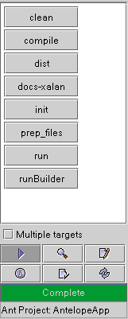
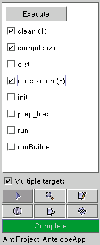

Ant targets are ran by simply clicking the associated button. The button for a running target will show red text. As the target executes, progress will be displayed on the progress bar below the button panel and output will be displayed either on the "Output" tab (in stand-alone mode) or in the Console window (in jEdit). The progress bar will be colored green as each task executes and succeeds, the bar will turn red on a build failure.
Long running targets can be stopped by clicking any of the target buttons. If Antelope is being ran as a jEdit plugin, execution can also be stopped by clicking the "Stop" button on the Console plugin. Depending on what the particular target is set to do, you may need to click the button several times to get execution to stop. An example is the <java> task with the "fork" attribute set to true. Ant starts a separate thread for the java task, so two clicks will be necessary, one to stop the jvm thread and one to stop the Ant thread.
Multiple targets can be selected to run one right after another by selecting the "Multiple targets" checkbox. When this checkbox is checked, the target buttons become checkboxes. Check the targets in the order that you want them to execute. The sequence of execution is displayed along side the target name. In the image below, the "docs-xalan" target will run first, followed by the "dist" target. Once you have selected some targets to run, start them by clicking the "Execute" button. The currently running target will be displayed in the progress bar. Once execution has started, it can be stopped by clicking the "Execute" button a second time. Again, depending on what the particular target is set to do, you may need to click it several times to get execution to stop.
